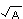
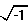

Anti-Dühring by Frederick Engels 1877
Part I: Philosophy
“The first and most important principle of the basic logical properties of being refers to the exclusion of contradiction. Contradiction is a category which can only appertain to a combination of thoughts, but not to reality. There are no contradictions in things, or, to put it another way, contradiction accepted as reality is itself the apex of absurdity {D. Ph. 30} ... The antagonism of forces measured against each other and moving in opposite directions is in fact the basic form of all actions m the life of the world and its creatures. But this opposition of the directions taken by the forces of elements and individuals does not in the slightest degree coincide with the idea of absurd contradictions {31} ... We can be content here with having cleared the fogs which generally rise from the supposed mysteries of logic by presenting a clear picture of the actual absurdity of contradictions in reality and with having shown the uselessness of the incense which has been burnt here and there in honour of the dialectics of contradiction — the very clumsily carved wooden doll which is substituted for the antagonistic world schematism” {32}
This is practically all we are told about dialectics in the Cursus der Philosophie. In his Kritische Geschichte, on the other hand, the dialectics of contradiction, and with it particularly Hegel, is treated quite differently.
“Contradiction, according to the Hegelian logic, or rather Logos doctrine, is objectively present not in thought, which by its nature can only be conceived as subjective and conscious, but in things and processes themselves and can be met with in so to speak corporeal form, so that absurdity does not remain an impossible combination of thought but becomes an actual force. The reality of the absurd is the first article of faith in the Hegelian unity of the logical and the illogical.... The more contradictory a thing the truer it is, or in other words, the more absurd the more credible it is. This maxim, which is not even newly invented but is borrowed from the theology of the Revelation and from mysticism, is the naked expression of the so-called dialectical principle” {D. K. G. 479-80}.
The thought-content of the two passages cited can be summed up in the statement that contradiction=absurdity, and therefore cannot occur in the real world. People who in other respects show a fair degree of common sense may regard this statement as having the same self-evident validity as the statement that a straight line cannot be a curve and a curve cannot be straight. But, regardless of all protests made by common sense, the differential calculus under certain circumstances nevertheless equates straight lines and curves, and thus obtains results which common sense, insisting on the absurdity of straight lines being identical with curves, can never attain. And in view of the important role which the so-called dialectics of contradiction has played in philosophy from the time of the ancient Greeks up to the present, even a stronger opponent than Herr Dühring should have felt obliged to attack it with other arguments besides one assertion and a good many abusive epithets.
True, so long as we consider things as at rest and lifeless, each one by itself, alongside and after each other, we do not run up against any contradictions in them. We find certain qualities which are partly common to, partly different from, and even contradictory to each other, but which in the last-mentioned case are distributed among different objects and therefore contain no contradiction within. Inside the limits of this sphere of observation we can get along on the basis of the usual, metaphysical mode of thought. But the position is quite different as soon as we consider things in their motion, their change, their life, their reciprocal influence on one another. Then we immediately become involved in contradictions. Motion itself is a contradiction: even simple mechanical change of position can only come about through a body being at one and the same moment of time both in one place and in another place, being in one and the same place and also not in it. And the continuous origination and simultaneous solution of this contradiction is precisely what motion is.
Here, therefore, we have a contradiction which “is objectively present in things and processes themselves and can be met with in so to speak corporeal form”. And what has Herr Dühring to say about it? He asserts that
up to the present there is “no bridge” whatever “in rational mechanics from the strictly static to the dynamic” {D. Ph. 80}.
The reader can now at last see what is hidden behind this favourite phrase of Herr Dühring’s — it is nothing but this: the mind which thinks metaphysically is absolutely unable to pass from the idea of rest to the idea of motion, because the contradiction pointed out above blocks its path. To it, motion is simply incomprehensible because it is a contradiction. And in asserting the incomprehensibility of motion, it admits against its will the existence of this contradiction, and thus admits the objective presence in things and processes themselves of a contradiction which is moreover an actual force.
If simple mechanical change of position contains a contradiction this is even more true of the higher forms of motion of matter, and especially of organic life and its development. We saw above that life consists precisely and primarily in this — that a being is at each moment itself and yet something else. Life is therefore also a contradiction which is present in things and processes themselves, and which constantly originates and resolves itself; and as soon as the contradiction ceases, life, too, comes to an end, and death steps in. We likewise saw that also in the sphere of thought we could not escape contradictions, and that for example the contradiction between man's inherently unlimited capacity for knowledge and its actual presence only in men who are externally limited and possess limited cognition finds its solution in what is — at least practically, for us — an endless succession of generations, in infinite progress.
We have already noted that one of the basic principles of higher mathematics is the contradiction that in certain circumstances straight lines and curves may be the same. It also gets up this other contradiction: that lines which intersect each other before our eyes nevertheless, only five or six centimetres from their point of intersection, can be shown to be parallel, that is, that they will never meet even if extended to infinity. And yet, working with these and with even far greater contradictions, it attains results which are not only correct but also quite unattainable for lower mathematics.
But even lower mathematics teems with contradictions. It is for example a contradiction that a root of A should be a power of A, and yet A1/2 = . It is a contradiction that a negative quantity should be the square of anything, for every negative quantity multiplied by itself gives a positive square. The square root of minus one is therefore not only a contradiction, but even an absurd contradiction, a real absurdity. And yet  is in many cases a necessary result of correct mathematical operations. Furthermore, where would mathematics — lower or higher — be, if it were prohibited from operation with ?
In its operations with variable quantities mathematics itself enters the field of dialectics, and it is significant that it was a dialectical philosopher, Descartes, who introduced this advance. The relation between the mathematics of variable and the mathematics of constant quantities is in general the same as the relation of dialectical to metaphysical thought. But this does not prevent the great mass of mathematicians from recognising dialectics only in the sphere of mathematics, and a good many of them from continuing to work in the old, limited, metaphysical way with methods that were obtained dialectically.
It would be possible to go more closely into Herr Dühring’s antagonism of forces and his antagonistic world schematism only if he had given us something more on this theme than the mere phrase. After accomplishing this feat this antagonism is not even once shown to us at work, either in his world schematism or in his natural philosophy — the most convincing admission that Herr Dühring can do absolutely nothing of a positive character with his “basic form of all actions in the life of the world and its creatures”. When someone has in fact lowered Hegel’s “Doctrine of Essence” to the platitude of forces moving in opposite directions but not in contradictions, certainly the best thing he can do is to avoid any application of this commonplace.
Marx's Capital furnishes Herr Dühring with another occasion for venting his anti-dialectical spleen.
“The absence of natural and intelligible logic which characterises these dialectical frills and mazes and conceptual arabesques... Even to the part that has already appeared we must apply the principle that in a certain respect and also in general” (!), “according to a well-known philosophical preconception, all is to be sought in each and each in all, and that therefore, according to this mixed and misconceived idea, it all amounts to one and the same thing in the end” {D. K. G. 496}.
This insight into the well-known philosophical preconception also enables Herr Dühring to prophesy with assurance what will be the “end” of Marx's economic philosophising, that is, what the following volumes of Capital will contain, and this he does exactly seven lines after he has declared that
“speaking in plain human language it is really impossible to divine what is still to come in the two” (final) “volumes” [61] {496}.
This, however, is not the first time that Herr Dühring’s writings are revealed to us as belonging to the “things” in which “contradiction is objectively present and can be met with in so to speak corporeal form” {479-80}. But this does not prevent him from going on victoriously as follows:
“Yet sound logic will in all probability triumph over its caricature... This presence of superiority and this mysterious dialectical rubbish will tempt no one who has even a modicum of sound judgment left to have anything to do ... with these deformities of thought and style. With the demise of the last relics of the dialectical follies this means of duping ... will lose its deceptive influence, and no one will any longer believe that he has to torture himself in order to get behind some profound piece of wisdom where the husked kernel of the abstruse things reveals at best the features of ordinary theories if not of absolute commonplaces... It is quite impossible to reproduce the” (Marxian) “maze in accordance with the Logos doctrine without prostituting sound logic” {D. K. C. 497}. Marx's method, according to Herr Dühring, consists in “performing dialectical miracles for his faithful followers” {498}, and so on.
We are not in any way concerned here as yet with the correctness or incorrectness of the economic results of Marx's researches, but only with the dialectical method used by Marx. But this much is certain: most readers of Capital will have learnt for the first time from Herr Dühring what it is in fact that they have read. And among them will also be Herr Dühring himself, who in the year 1867 (Ergänzungsblätter III, No. 3) was still able to provide what for a thinker of his calibre was a relatively rational review of the book; and he did this without first being obliged as he now declares is indispensable, to translate the Marxian argument into Dühringian language. And though even then he committed the blunder of identifying Marxian dialectics with the Hegelian, he had not quite lost the capacity to distinguish between the method and the results obtained by using it, and to understand that the latter are not refuted in detail by lampooning the former in general.
At any rate, the most astonishing piece of information given by Herr Dühring is the statement that from the Marxian standpoint “it all amounts to one and the same thing in the end” {496}, that therefore to Marx, for example, capitalists and wage-workers, feudal, capitalist and socialist modes of production are also “one and the same thing” — no doubt in the end even Marx and Herr Dühring are “one and the same thing”. Such utter nonsense can only be explained if we suppose that the mere mention of the word dialectics throws Herr Dühring into such a state of mental irresponsibility that, as a result of a certain mixed and misconceived idea, what he says and does is “one and the same thing” in the end.
We have here a sample of what Herr Dühring calls
“my historical depiction in the grand style” {556}, or “the summary treatment which settles with genus and type, and does not condescend to honour what a Hume called the learned mob with an exposure in micrological detail; this treatment in a higher and nobler style is the only one compatible with the interests of complete truth and with one's duty to the public which is free from the bonds of the guilds” {507}.
Historical depiction in the grand style and the summary settlement with genus and type is indeed very convenient for Herr Dühring, inasmuch as this method enables him to neglect all known facts as micrological and equate them to zero, so that instead of proving anything he need only use general phrases, make assertions and thunder his denunciations. The method has the further advantage that it offers no real foothold to an opponent, who is consequently left with almost no other possibility of reply than to make similar summary assertions in the grand style, to resort to general phrases and finally thunder back denunciations at Herr Dühring — in a word, as they say, engage in a clanging match, which is not to everyone“s taste. We must therefore be grateful to Herr Dühring for occasionally, by way of exception, dropping the higher and nobler style, and giving us at least two examples of the unsound Marxian Logos doctrine.
“How comical is the reference to the confused, hazy Hegelian notion that quantity changes into quality, and that therefore an advance, when it reaches a certain size, becomes capital by this quantitative increase alone” {498}.
In this “expurgated” presentation by Herr Dühring that statement certainly seems curious enough. Let us see how it looks in the original, in Marx. On page 313 (2nd edition of Capital), Marx, on the basis of his previous examination of constant and variable capital and surplus-value, draws the conclusion that “not every sum of money, or of value, is at pleasure transformable into capital. To effect this transformation, in fact, a certain minimum of money or of exchange-value must be presupposed in the hands of the individual possessor of money or commodities.” He takes as an example the case of a labourer in any branch of industry, who works daily eight hours for himself — that is, in producing the value of his wages — and the following four hours for the capitalist, in producing surplus-value, which immediately flows into the pocket of the capitalist. In this case, one would have to have at his disposal a sum of values sufficient to enable one to provide two labourers with raw materials, instruments of labour and wages, in order to pocket enough surplus-value every day to live on as well as one of his labourers. And as the aim of capitalist production is not mere subsistence but the increase of wealth, our man with his two labourers would still not be a capitalist. Now in order that he may live twice as well as an ordinary labourer, and turn half of the surplus-value produced again into capital, he would have to be able to employ eight labourers, that is, he would have to possess four times the sum of values assumed above. And it is only after this, and in the course of still further explanations elucidating and substantiating the fact that not every petty sum of values is enough to be transformable into capital, but that in this respect each period of development and each branch of industry has its definite minimum sum, that Marx observes: “Here, as in natural science, is shown the correctness of the law discovered by Hegel in his Logic, that merely quantitative changes beyond a certain point pass into qualitative differences.”
And now let the reader admire the higher and nobler style, by virtue of which Herr Dühring attributes to Marx the opposite of what he really said. Marx says: The fact that a sum of values can be transformed into capital only when it has reached a certain size, varying according to the circumstances, but in each case definite minimum size — this fact is a proof of the correctness of the Hegelian law. Herr Dühring makes him say: Because, according to the Hegelian law, quantity changes into quality, “therefore an advance, when it reaches a certain size, becomes capital” {D. K. G. 498}. That is to say, the very opposite.
In connection with Herr Dühring’s examination of the Darwin case, we have already got to know his habit, “in the interests of complete truth” and because of his “duty to the public which is free from the bonds of the guilds” {507}, of quoting incorrectly. It becomes more and more evident that this habit is an inner necessity of the philosophy of reality, and it is certainly a very “summary treatment” {507}. Not to mention the fact that Herr Dühring further makes Marx speak of any kind of “advance” whatsoever, whereas Marx only refers to an advance made in the form of raw materials, instruments of labour, and wages; and that in doing this Herr Dühring succeeds in making Marx speak pure nonsense. And then he has the cheek to describe as comic the nonsense which he himself has fabricated. Just as he built up a Darwin of his own fantasy in order to try out his strength against him, so here he builds up a fantastic Marx. “Historical depiction in the grand style” {556}, indeed!
We have already seen earlier, when discussing world schematism, that in connection with this Hegelian nodal line of measure relations — in which quantitative change suddenly passes at certain points into qualitative transformation — Herr Dühring had a little accident: in a weak moment he himself recognised and made use of this line. We gave there one of the best-known examples — that of the change of the aggregate states of water, which under normal atmospheric pressure changes at 0° C from the liquid into the solid state, and at 100°C from the liquid into the gaseous state, so that at both these turning-points the merely quantitative change of temperature brings about a qualitative change in the condition of the water.
In proof of this law we might have cited hundreds of other similar facts from nature as well as from human society. Thus, for example, the whole of Part IV of Marx's Capital — production of relative surplus-value — deals, in the field of co-operation, division of labour and manufacture, machinery and modern industry, with innumerable cases in which quantitative change alters the quality, and also qualitative change alters the quantity, of the things under consideration; in which therefore, to use the expression so hated by Herr Dühring, quantity is transformed into quality and vice versa. As for example the fact that the co-operation of a number of people, the fusion of many forces into one single force, creates, to use Marx's phrase, a “new power”, which is essentially different from the sum of its separate forces.
Over and above this, in the passage which, in the interests of complete truth, Herr Dühring perverted into its opposite, Marx had added a footnote: “The molecular theory of modern chemistry first scientifically worked out by Laurent and Gerhardt rests on no other law.” But what did that matter to Herr Dühring? He knew that:
“the eminently modern educative elements provided by the natural-scientific mode of thought are lacking precisely among those who, like Marx and his rival Lassalle, make half-science and a little philosophistics the meagre equipment with which to vamp up their learning” {D. K. G. 504} —
while with Herr Dühring
“the main achievements of exact knowledge in mechanics, physics and chemistry” {D. Ph. 517} and so forth serve as the basis —
we have seen how. However, in order to enable third persons, too, to reach a decision in the matter, we shall look a little more closely into the example cited in Marx's footnote.
What is referred to here is the homologous series of carbon compounds, of which a great many are already known and each of which has its own algebraic formula of composition. If, for example, as is done in chemistry, we denote an atom of carbon by C, an atom of hydrogen by H, an atom of oxygen by O, and the number of atoms of carbon contained in each compound by n, the molecular formulas for some of these series can be expressed as follows:
CnH2n+2 — the series of normal
paraffins
CnH2n+2O — the series of primary alcohols
CnH2nO2 — the series of the monobasic
fatty acids.
Let us take as an example the last of these series, and let us assume successively that n=l, n=2, n=3, etc. We then obtain the following results (omitting the isomers):
CH2O2 — formic acid: boiling point
100° melting point 1°
C2H4O2 — acetic acid: 118° melting point
17°
C3H6O2 — propionic acid: 140° " "
C8H8O2 — butyric acid: 162°
C5H10O2 — valerianic acid: 175°
and so on to C50H60O2, melissic acid, which melts only at 80° and has no boiling point at all, because it cannot evaporate without disintegrating.
Here therefore we have a whole series of qualitatively different bodies, formed by the simple quantitative addition of elements, and in fact always in the same proportion. This is most clearly evident in cases where the quantity of all the elements of the compound changes in the same proportion. Thus, in the normal paraffins CnH2n+2, the lowest is methane, CH4, a gas; the highest known, hexadecane, C16H34, is a solid body forming colourless crystals which melts at 21° and boils only at 278°. Each new member of both series comes into existence through the addition of CH2, one atom of carbon and two atoms of hydrogen, to the molecular formula of the preceding member, and this quantitative change in the molecular formula produces each time a qualitatively different body.
These series, however, are only one particularly obvious example; throughout practically the whole of chemistry, even in the various nitrogen oxides and oxygen acids of phosphorus or sulphur, one can see how “quantity changes into quality”, and this allegedly confused, hazy Hegelian notion appears in so to speak corporeal form in things and processes — and no one but Herr Dühring is confused and befogged by it. And if Marx was the first to call attention to it, and if Herr Dühring read the reference without even understanding it (otherwise he would certainly not have allowed this unparalleled outrage to pass unchallenged), this is enough — even without looking back at the famous Dühringian philosophy of nature — to make it clear which of the two, Marx or Herr Dühring, is lacking in “the eminently modern educative elements provided by the natural-scientific mode of thought” {D. K. G. 504} and in acquaintance with the “main achievements of ... chemistry” {D. Ph. 517}.
In conclusion we shall call one more witness for the transformation of quantity into quality, namely — Napoleon. He describes the combat between the French cavalry, who were bad riders but disciplined, and the Mamelukes, who were undoubtedly the best horsemen of their time for single combat, but lacked discipline, as follows:
“Two Mamelukes were undoubtedly more than a match for three Frenchmen; 100 Mamelukes were equal to 100 Frenchmen; 300 Frenchmen could generally beat 300 Mamelukes, and 1,000 Frenchmen invariably defeated 1,500 Mamelukes.”
Just as with Marx a definite, though varying, minimum sum of exchange-values was necessary to make possible its transformation into capital, so with Napoleon a detachment of cavalry had to be of a definite minimum number in order to make it possible for the force of discipline, embodied in closed order and planned utilisation, to manifest itself and rise superior even to greater numbers of irregular cavalry, in spite of the latter being better mounted, more dexterous horsemen and fighters, and at least as brave as the former. But what does this prove as against Herr Dühring? Was not Napoleon miserably vanquished in his conflict with Europe? Did he not suffer defeat after defeat? And why? Solely in consequence of having introduced the confused, hazy Hegelian notion into cavalry tactics!